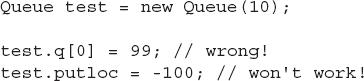
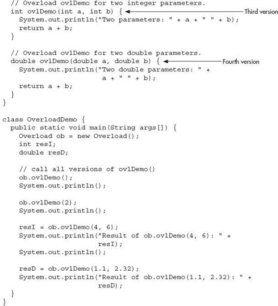
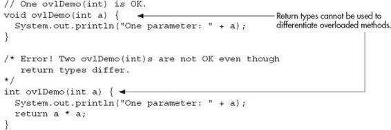
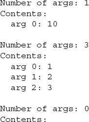

Chapter 6
A Closer Look at Methods and Classes
Key Skills & Concepts
 Control access to members
Control access to members Pass objects to a method
Return objects from a method
Overload methods
Overload constructors
Use recursion
Apply static
Use inner classes
Use varargs
This chapter resumes our examination of classes and methods. It begins by explaining how to control access to the members of a class. It then discusses the passing and returning of objects, method overloading, recursion, and the use of the keyword static. Also described are nested classes and variable-length arguments.
Controlling Access to Class Members
In its support for encapsulation, the class provides two major benefits. First, it links data with the code that manipulates it. You have been taking advantage of this aspect of the class since Chapter 4. Second, it provides the means by which access to members can be controlled. It is this feature that is examined here.
Although Java’s approach is a bit more sophisticated, in essence, there are two basic types of class members: public and private. A public member can be freely accessed by code defined outside of its class. This is the type of class member that we have been using up to this point. A private member can be accessed only by other methods defined by its class. It is through the use of private members that access is controlled.
Restricting access to a class’ members is a fundamental part of object-oriented programming because it helps prevent the misuse of an object. By allowing access to private data only through a well-defined set of methods, you can prevent improper values from being assigned to that data—by performing a range check, for example. It is not possible for code outside the class to set the value of a private member directly. You can also control precisely how and when the data within an object is used. Thus, when correctly implemented, a class creates a “black box” that can be used, but the inner workings of which are not open to tampering.
Up to this point, you haven’t had to worry about access control because Java provides a default access setting in which, for the types of programs shown earlier, the members of a class are freely available to the other code in the program. (Thus, for the preceding examples, the default access setting is essentially public.) Although convenient for simple classes (and example programs in books such as this one), this default setting is inadequate for many real-world situations. Here you will see how to use Java’s other access control features.
Java’s Access Modifiers
Member access control is achieved through the use of three access modifiers: public, private, and protected. As explained, if no access modifier is used, the default access setting is assumed. In this chapter, we will be concerned with public and private. The protected modifier applies only when inheritance is involved and is described in Chapter 8.
When a member of a class is modified by the public specifier, that member can be accessed by any other code in your program. This includes methods defined inside other classes.
When a member of a class is specified as private, that member can be accessed only by other members of its class. Thus, methods in other classes cannot access a private member of another class.
The default access setting (in which no access modifier is used) is the same as public unless your program is broken down into packages. A package is, essentially, a grouping of classes. Packages are both an organizational and an access control feature, but a discussion of packages must wait until Chapter 8. For the types of programs shown in this and the preceding chapters, public access is the same as default access.
An access modifier precedes the rest of a member’s type specification. That is, it must begin a member’s declaration statement. Here are some examples:
To understand the effects of public and private, consider the following program:
As you can see, inside the MyClass class, alpha is specified as private, beta is explicitly specified as public, and gamma uses the default access, which for this example is the same as specifying public. Because alpha is private, it cannot be accessed by code outside of its class. Therefore, inside the AccessDemo class, alpha cannot be used directly. It must be accessed through its public accessor methods: setAlpha( ) and getAlpha( ). If you were to remove the comment symbol from the beginning of the following line,
you would not be able to compile this program because of the access violation. Although access to alpha by code outside of MyClass is not allowed, methods defined within MyClass can freely access it, as the setAlpha( ) and getAlpha( ) methods show.
The key point is this: A private member can be used freely by other members of its class, but it cannot be accessed by code outside its class.
To see how access control can be applied to a more practical example, consider the following program that implements a “fail-soft” int array, in which boundary errors are prevented, thus avoiding a run-time exception from being generated. This is accomplished by encapsulating the array as a private member of a class, allowing access to the array only through member methods. With this approach, any attempt to access the array beyond its boundaries can be prevented, with such an attempt failing gracefully (resulting in a “soft” landing rather than a “crash”). The fail-soft array is implemented by the FailSoftArray class, shown here:
The output from the program is shown here:
Let’s look closely at this example. Inside FailSoftArray are defined three private members. The first is a, which stores a reference to the array that will actually hold information. The second is errval, which is the value that will be returned when a call to get( ) fails. The third is the private method indexOK( ), which determines whether an index is within bounds. Thus, these three members can be used only by other members of the FailSoftArray class. Specifically, a and errval can be used only by other methods in the class, and indexOK( ) can be called only by other members of FailSoftArray. The rest of the class members are public and can be called by any other code in a program that uses FailSoftArray.
When a FailSoftArray object is constructed, you must specify the size of the array and the value that you want to return if a call to get( ) fails. The error value must be a value that would otherwise not be stored in the array. Once constructed, the actual array referred to by a and the error value stored in errval cannot be accessed by users of the FailSoftArray object. Thus, they are not open to misuse. For example, the user cannot try to index a directly, possibly exceeding its bounds. Access is available only through the get( ) and put( ) methods.
The indexOK( ) method is private mostly for the sake of illustration. It would be harmless to make it public because it does not modify the object. However, since it is used internally by the FailSoftArray class, it can be private.
Notice that the length instance variable is public. This is in keeping with the way Java implements arrays. To obtain the length of a FailSoftArray, simply use its length member.
To use a FailSoftArray array, call put( ) to store a value at the specified index. Call get( ) to retrieve a value from a specified index. If the index is out-of-bounds, put( ) returns false and get( ) returns errval.
For the sake of convenience, the majority of the examples in this book will continue to use default access for most members. Remember, however, that in the real world, restricting access to members—especially instance variables—is an important part of successful object-oriented programming. As you will see in Chapter 7, access control is even more vital when inheritance is involved.
| Try This 6-1 |
Improving the Queue Class |
You can use the private modifier to make a rather important improvement to the Queue class developed in Chapter 5, Try This 5-2. In that version, all members of the Queue class use the default access, which is essentially public. This means that it would be possible for a program that uses a Queue to directly access the underlying array, possibly accessing its elements out of turn. Since the entire point of a queue is to provide a first-in, first-out list, allowing out-of-order access is not desirable. It would also be possible for a malicious programmer to alter the values stored in the putloc and getloc indices, thus corrupting the queue. Fortunately, these types of problems are easy to prevent by applying the private specifier.
1. Copy the original Queue class in Try This 5-2 to a new file called Queue.java.
2. In the Queue class, add the private modifier to the q array, and the indices putloc and getloc, as shown here:
3. Changing q, putloc, and getloc from default access to private access has no effect on a program that properly uses Queue. For example, it still works fine with the QDemo class from Try This 5-2. However, it prevents the improper use of a Queue. For example, the following types of statements are illegal:

4. Now that q, putloc, and getloc are private, the Queue class strictly enforces the first-in, first-out attribute of a queue.
Pass Objects to Methods
Up to this point, the examples in this book have been using simple types as parameters to methods. However, it is both correct and common to pass objects to methods. For example, the following program defines a class called Block that stores the dimensions of a three-dimensional block:
This program generates the following output:
The sameBlock( ) and sameVolume( ) methods compare the Block object passed as a parameter to the invoking object. For sameBlock( ), the dimensions of the objects are compared and true is returned only if the two blocks are the same. For sameVolume( ), the two blocks are compared only to determine whether they have the same volume. In both cases, notice that the parameter ob specifies Block as its type. Although Block is a class type created by the program, it is used in the same way as Java’s built-in types.
How Arguments Are Passed
As the preceding example demonstrated, passing an object to a method is a straightforward task. However, there are some nuances of passing an object that are not shown in the example. In certain cases, the effects of passing an object will be different from those experienced when passing non-object arguments. To see why, you need to understand in a general sense the two ways in which an argument can be passed to a subroutine.
The first way is call-by-value. This approach copies the value of an argument into the formal parameter of the subroutine. Therefore, changes made to the parameter of the subroutine have no effect on the argument in the call. The second way an argument can be passed is call-by-reference. In this approach, a reference to an argument (not the value of the argument) is passed to the parameter. Inside the subroutine, this reference is used to access the actual argument specified in the call. This means that changes made to the parameter will affect the argument used to call the subroutine. As you will see, although Java uses call-by-value to pass arguments, the precise effect differs between whether a primitive type or a reference type is passed.
When you pass a primitive type, such as int or double, to a method, it is passed by value. Thus, a copy of the argument is made, and what occurs to the parameter that receives the argument has no effect outside the method. For example, consider the following program:
The output from this program is shown here:
As you can see, the operations that occur inside noChange( ) have no effect on the values of a and b used in the call.
When you pass an object to a method, the situation changes dramatically, because objects are implicitly passed by reference. Keep in mind that when you create a variable of a class type, you are creating a reference to an object. It is the reference, not the object itself, that is actually passed to the method. As a result, when you pass this reference to a method, the parameter that receives it will refer to the same object as that referred to by the argument. This effectively means that objects are passed to methods by use of call-by-reference. Changes to the object inside the method do affect the object used as an argument. For example, consider the following program:
This program generates the following output:
As you can see, in this case, the actions inside change( ) have affected the object used as an argument.
Ask the Expert
Q: Is there any way that I can pass a primitive type by reference?
A: Not directly. However, Java defines a set of classes that wrap the primitive types in objects. These are Double, Float, Byte, Short, Integer, Long, and Character. In addition to allowing a primitive type to be passed by reference, these wrapper classes define several methods that enable you to manipulate their values. For example, the numeric type wrappers include methods that convert a numeric value from its binary form into its human-readable String form, and vice versa.
Remember, when an object reference is passed to a method, the reference itself is passed by use of call-by-value. However, since the value being passed refers to an object, the copy of that value will still refer to the same object referred to by its corresponding argument.
Returning Objects
A method can return any type of data, including class types. For example, the class ErrorMsg shown here could be used to report errors. Its method, getErrorMsg( ), returns a String object that contains a description of an error based upon the error code that it is passed.
Its output is shown here:
You can, of course, also return objects of classes that you create. For example, here is a reworked version of the preceding program that creates two error classes. One is called Err, and it encapsulates an error message along with a severity code. The second is called ErrorInfo. It defines a method called getErrorInfo( ), which returns an Err object.
Here is the output:
Each time getErrorInfo( ) is invoked, a new Err object is created, and a reference to it is returned to the calling routine. This object is then used within main( ) to display the error message and severity code.
When an object is returned by a method, it remains in existence until there are no more references to it. At that point, it is subject to garbage collection. Thus, an object won’t be destroyed just because the method that created it terminates.
Method Overloading
In this section, you will learn about one of Java’s most exciting features: method overloading. In Java, two or more methods within the same class can share the same name, as long as their parameter declarations are different. When this is the case, the methods are said to be overloaded, and the process is referred to as method overloading. Method overloading is one of the ways that Java implements polymorphism.
In general, to overload a method, simply declare different versions of it. The compiler takes care of the rest. You must observe one important restriction: the type and/or number of the parameters of each overloaded method must differ. It is not sufficient for two methods to differ only in their return types. (Return types do not provide sufficient information in all cases for Java to decide which method to use.) Of course, overloaded methods may differ in their return types, too. When an overloaded method is called, the version of the method whose parameters match the arguments is executed.
Here is a simple example that illustrates method overloading:

This program generates the following output:
As you can see, ovlDemo( ) is overloaded four times. The first version takes no parameters, the second takes one integer parameter, the third takes two integer parameters, and the fourth takes two double parameters. Notice that the first two versions of ovlDemo( ) return void, and the second two return a value. This is perfectly valid, but as explained, overloading is not affected one way or the other by the return type of a method. Thus, attempting to use the following two versions of ovlDemo( ) will cause an error:

As the comments suggest, the difference in their return types is insufficient for the purposes of overloading.
As you will recall from Chapter 2, Java provides certain automatic type conversions. These conversions also apply to parameters of overloaded methods. For example, consider the following:
The output from the program is shown here:
In this example, only two versions of f( ) are defined: one that has an int parameter and one that has a double parameter. However, it is possible to pass f( ) a byte, short, or float value. In the case of byte and short, Java automatically converts them to int. Thus, f(int) is invoked. In the case of float, the value is converted to double and f(double) is called.
It is important to understand, however, that the automatic conversions apply only if there is no direct match between a parameter and an argument. For example, here is the preceding program with the addition of a version of f( ) that specifies a byte parameter:
Now when the program is run, the following output is produced:
In this version, since there is a version of f( ) that takes a byte argument, when f( ) is called with a byte argument, f(byte) is invoked and the automatic conversion to int does not occur.
Method overloading supports polymorphism because it is one way that Java implements the “one interface, multiple methods” paradigm. To understand how, consider the following: In languages that do not support method overloading, each method must be given a unique name. However, frequently you will want to implement essentially the same method for different types of data. Consider the absolute value function. In languages that do not support overloading, there are usually three or more versions of this function, each with a slightly different name. For instance, in C, the function abs( ) returns the absolute value of an integer, labs( ) returns the absolute value of a long integer, and fabs( ) returns the absolute value of a floating-point value. Since C does not support overloading, each function has to have its own name, even though all three functions do essentially the same thing. This makes the situation more complex, conceptually, than it actually is. Although the underlying concept of each function is the same, you still have three names to remember. This situation does not occur in Java, because each absolute value method can use the same name. Indeed, Java’s standard class library includes an absolute value method, called abs( ). This method is overloaded by Java’s Math class to handle all of the numeric types. Java determines which version of abs( ) to call based upon the type of argument.
The value of overloading is that it allows related methods to be accessed by use of a common name. Thus, the name abs represents the general action that is being performed. It is left to the compiler to choose the correct specific version for a particular circumstance. You, the programmer, need only remember the general operation being performed. Through the application of polymorphism, several names have been reduced to one. Although this example is fairly simple, if you expand the concept, you can see how overloading can help manage greater complexity.
When you overload a method, each version of that method can perform any activity you desire. There is no rule stating that overloaded methods must relate to one another. However, from a stylistic point of view, method overloading implies a relationship. Thus, while you can use the same name to overload unrelated methods, you should not. For example, you could use the name sqr to create methods that return the square of an integer and the square root of a floating-point value. But these two operations are fundamentally different. Applying method overloading in this manner defeats its original purpose. In practice, you should overload only closely related operations.
Ask the Expert
Q: I’ve heard the term signature used by Java programmers. What is it?
A: As it applies to Java, a signature is the name of a method plus its parameter list. Thus, for the purposes of overloading, no two methods within the same class can have the same signature. Notice that a signature does not include the return type, since it is not used by Java for overload resolution.
Overloading Constructors
Like methods, constructors can also be overloaded. Doing so allows you to construct objects in a variety of ways. For example, consider the following program:
The output from the program is shown here:
MyClass( ) is overloaded four ways, each constructing an object differently. The proper constructor is called based upon the parameters specified when new is executed. By overloading a class’ constructor, you give the user of your class flexibility in the way objects are constructed.
One of the most common reasons that constructors are overloaded is to allow one object to initialize another. For example, consider this program that uses the Summation class to compute the summation of an integer value:
The output is shown here:
Often, as this example shows, an advantage of providing a constructor that uses one object to initialize another is efficiency. In this case, when s2 is constructed, it is not necessary to recompute the summation. Of course, even in cases when efficiency is not an issue, it is often useful to provide a constructor that makes a copy of an object.
| Try This 6-2 |
Overloading the Queue Constructor |
In this project, you will enhance the Queue class by giving it two additional constructors. The first will construct a new queue from another queue. The second will construct a queue, giving it initial values. As you will see, adding these constructors enhances the usability of Queue substantially.
1. Create a file called QDemo2.java and copy the updated Queue class from Try This 6-1 into it.
2. First, add the following constructor, which constructs a queue from a queue.
Look closely at this constructor. It initializes putloc and getloc to the values contained in the ob parameter. It then allocates a new array to hold the queue and copies the elements from ob into that array. Once constructed, the new queue will be an identical copy of the original, but both will be completely separate objects.
3. Now add the constructor that initializes the queue from a character array, as shown here:
This constructor creates a queue large enough to hold the characters in a and then stores those characters in the queue.
4. Here is the complete updated Queue class along with the QDemo2 class, which demonstrates it:
The output from the program is shown here:
Recursion
In Java, a method can call itself. This process is called recursion, and a method that calls itself is said to be recursive. In general, recursion is the process of defining something in terms of itself and is somewhat similar to a circular definition. The key component of a recursive method is a statement that executes a call to itself. Recursion is a powerful control mechanism.
The classic example of recursion is the computation of the factorial of a number. The factorial of a number N is the product of all the whole numbers between 1 and N. For example, 3 factorial is 1 × 2 × 3, or 6. The following program shows a recursive way to compute the factorial of a number. For comparison purposes, a nonrecursive equivalent is also included.
The output from this program is shown here:
The operation of the nonrecursive method factI( ) should be clear. It uses a loop starting at 1 and progressively multiplies each number by the moving product.
The operation of the recursive factR( ) is a bit more complex. When factR( ) is called with an argument of 1, the method returns 1; otherwise, it returns the product of factR(n–1)*n. To evaluate this expression, factR( ) is called with n–1. This process repeats until n equals 1 and the calls to the method begin returning. For example, when the factorial of 2 is calculated, the first call to factR( ) will cause a second call to be made with an argument of 1. This call will return 1, which is then multiplied by 2 (the original value of n). The answer is then 2. You might find it interesting to insert println( ) statements into factR( ) that show at what level each call is, and what the intermediate results are.
When a method calls itself, new local variables and parameters are allocated storage on the stack, and the method code is executed with these new variables from the start. A recursive call does not make a new copy of the method. Only the arguments are new. As each recursive call returns, the old local variables and parameters are removed from the stack, and execution resumes at the point of the call inside the method. Recursive methods could be said to “telescope” out and back.
Recursive versions of many routines may execute a bit more slowly than their iterative equivalents because of the added overhead of the additional method calls. Too many recursive calls to a method could cause a stack overrun. Because storage for parameters and local variables is on the stack and each new call creates a new copy of these variables, it is possible that the stack could be exhausted. If this occurs, the Java run-time system will cause an exception. However, you probably will not have to worry about this unless a recursive routine runs wild. The main advantage to recursion is that some types of algorithms can be implemented more clearly and simply recursively than they can be iteratively. For example, the Quicksort sorting algorithm is quite difficult to implement in an iterative way. Also, some problems, especially AI-related ones, seem to lend themselves to recursive solutions. When writing recursive methods, you must have a conditional statement, such as an if, somewhere to force the method to return without the recursive call being executed. If you don’t do this, once you call the method, it will never return. This type of error is very common when working with recursion. Use println( ) statements liberally so that you can watch what is going on and abort execution if you see that you have made a mistake.
Understanding static
There will be times when you will want to define a class member that will be used independently of any object of that class. Normally a class member must be accessed through an object of its class, but it is possible to create a member that can be used by itself, without reference to a specific instance. To create such a member, precede its declaration with the keyword static. When a member is declared static, it can be accessed before any objects of its class are created, and without reference to any object. You can declare both methods and variables to be static. The most common example of a static member is main( ). main( ) is declared as static because it must be called by the JVM when your program begins. Outside the class, to use a static member, you need only specify the name of its class followed by the dot operator. No object needs to be created. For example, if you want to assign the value 10 to a static variable called count that is part of the Timer class, use this line:

This format is similar to that used to access normal instance variables through an object, except that the class name is used. A static method can be called in the same way—by use of the dot operator on the name of the class.
Variables declared as static are, essentially, global variables. When an object is declared, no copy of a static variable is made. Instead, all instances of the class share the same static variable. Here is an example that shows the differences between a static variable and an instance variable:
The output from the program is shown here:
As you can see, the static variable y is shared by both ob1 and ob2. Changing it affects the entire class, not just an instance.
The difference between a static method and a normal method is that the static method is called through its class name, without any object of that class being created. You have seen an example of this already: the sqrt( ) method, which is a static method within Java’s standard Math class. Here is an example that creates a static method:
The output is shown here:
Methods declared as static have several restrictions:
They can directly call only other static methods.
They can directly access only static data.
They do not have a this reference.
For example, in the following class, the static method valDivDenom( ) is illegal:
Here, denom is a normal instance variable that cannot be accessed within a static method.
Static Blocks
Sometimes a class will require some type of initialization before it is ready to create objects. For example, it might need to establish a connection to a remote site. It also might need to initialize certain static variables before any of the class’ static methods are used. To handle these types of situations, Java allows you to declare a static block. A static block is executed when the class is first loaded. Thus, it is executed before the class can be used for any other purpose. Here is an example of a static block:
The output is shown here:
As you can see, the static block is executed before any objects are constructed.
| Try This 6-3 |
The Quicksort |
In Chapter 5 you were shown a simple sorting method called the Bubble sort. It was mentioned at the time that substantially better sorts exist. Here you will develop a version of one of the best: the Quicksort. The Quicksort, invented and named by C.A.R. Hoare, is the best general-purpose sorting algorithm currently available. The reason it could not be shown in Chapter 5 is that the best implementations of the Quicksort rely on recursion. The version we will develop sorts a character array, but the logic can be adapted to sort any type of object you like.
The Quicksort is built on the idea of partitions. The general procedure is to select a value, called the comparand, and then to partition the array into two sections. All elements greater than or equal to the partition value are put on one side, and those less than the value are put on the other. This process is then repeated for each remaining section until the array is sorted. For example, given the array fedacb and using the value d as the comparand, the first pass of the Quicksort would rearrange the array as follows:
| Initial |
f e d a c b |
| Pass1 |
b c a d e f |
This process is then repeated for each section—that is, bca and def. As you can see, the process is essentially recursive in nature, and indeed, the cleanest implementation of Quicksort is recursive.
You can select the comparand value in two ways. You can either choose it at random, or you can select it by averaging a small set of values taken from the array. For optimal sorting, you should select a value that is precisely in the middle of the range of values. However, this is not easy to do for most sets of data. In the worst case, the value chosen is at one extremity. Even in this case, however, Quicksort still performs correctly. The version of Quicksort that we will develop selects the middle element of the array as the comparand.
1. Create a file called QSDemo.java.
2. First, create the Quicksort class shown here:
To keep the interface to the Quicksort simple, the Quicksort class provides the qsort( ) method, which sets up a call to the actual Quicksort method, qs( ). This enables the Quicksort to be called with just the name of the array to be sorted, without having to provide an initial partition. Since qs( ) is only used internally, it is specified as private.
3. To use the Quicksort, simply call Quicksort.qsort( ). Since qsort( ) is specified as static, it can be called through its class rather than on an object. Thus, there is no need to create a Quicksort object. After the call returns, the array will be sorted. Remember, this version works only for character arrays, but you can adapt the logic to sort any type of arrays you want.
4. Here is a program that demonstrates Quicksort:
Introducing Nested and Inner Classes
In Java, you can define a nested class. This is a class that is declared within another class. Frankly, the nested class is a somewhat advanced topic. In fact, nested classes were not even allowed in the first version of Java. It was not until Java 1.1 that they were added. However, it is important that you know what they are and the mechanics of how they are used because they play an important role in many real-world programs.
A nested class does not exist independently of its enclosing class. Thus, the scope of a nested class is bounded by its outer class. A nested class that is declared directly within its enclosing class scope is a member of its enclosing class. It is also possible to declare a nested class that is local to a block.
There are two general types of nested classes: those that are preceded by the static modifier and those that are not. The only type that we are concerned about in this book is the non-static variety. This type of nested class is also called an inner class. It has access to all of the variables and methods of its outer class and may refer to them directly in the same way that other non-static members of the outer class do.
Sometimes an inner class is used to provide a set of services that is used only by its enclosing class. Here is an example that uses an inner class to compute various values for its enclosing class:
The output from the program is shown here:
In this example, the inner class Inner computes various values from the array nums, which is a member of Outer. As explained, an inner class has access to the members of its enclosing class, so it is perfectly acceptable for Inner to access the nums array directly. Of course, the opposite is not true. For example, it would not be possible for analyze( ) to invoke the min( ) method directly, without creating an Inner object.
As mentioned, it is possible to nest a class within a block scope. Doing so simply creates a localized class that is not known outside its block. The following example adapts the ShowBits class developed in Try This 5-3 for use as a local class.
The output from this version of the program is shown here:
In this example, the ShowBits class is not known outside of main( ), and any attempt to access it by any method other than main( ) will result in an error.
One last point: You can create an inner class that does not have a name. This is called an anonymous inner class. An object of an anonymous inner class is instantiated when the class is declared, using new. Anonymous inner classes are discussed further in Chapter 16.
Varargs: Variable-Length Arguments
Sometimes you will want to create a method that takes a variable number of arguments, based on its precise usage. For example, a method that opens an Internet connection might take a user name, password, file name, protocol, and so on, but supply defaults if some of this information is not provided. In this situation, it would be convenient to pass only the arguments to which the defaults did not apply. To create such a method implies that there must be some way to create a list of arguments that is variable in length, rather than fixed.
In the past, methods that required a variable-length argument list could be handled two ways, neither of which was particularly pleasing. First, if the maximum number of arguments was small and known, then you could create overloaded versions of the method, one for each way the method could be called. Although this works and is suitable for some situations, it applies to only a narrow class of situations. In cases where the maximum number of potential arguments is larger, or unknowable, a second approach was used in which the arguments were put into an array, and then the array was passed to the method. Frankly, both of these approaches often resulted in clumsy solutions, and it was widely acknowledged that a better approach was needed.
Ask the Expert
Q: What makes a static nested class different from a non-static one?
A: A static nested class is one that has the static modifier applied. Because it is static, it can access only other static members of the enclosing class directly. It must access other members of its outer class through an object reference.
Beginning with JDK 5, this need was addressed by the inclusion of a feature that simplified the creation of methods that require a variable number of arguments. This feature is called varargs, which is short for variable-length arguments. A method that takes a variable number of arguments is called a variable-arity method, or simply a varargs method. The parameter list for a varargs method is not fixed, but rather variable in length. Thus, a varargs method can take a variable number of arguments.
Varargs Basics
A variable-length argument is specified by three periods (…). For example, here is how to write a method called vaTest( ) that takes a variable number of arguments:
Notice that v is declared as shown here:
This syntax tells the compiler that vaTest( ) can be called with zero or more arguments. Furthermore, it causes v to be implicitly declared as an array of type int[ ]. Thus, inside vaTest( ), v is accessed using the normal array syntax.
Here is a complete program that demonstrates vaTest( ):
The output from the program is shown here:

There are two important things to notice about this program. First, as explained, inside vaTest( ), v is operated on as an array. This is because v
is an array. The … syntax simply tells the compiler that a variable number of arguments will be used, and that these arguments will be stored in the array referred to by v. Second, in main( ), vaTest( ) is called with different numbers of arguments, including no arguments at all. The arguments are automatically put in an array and passed to v. In the case of no arguments, the length of the array is zero.
A method can have “normal” parameters along with a variable-length parameter. However, the variable-length parameter must be the last parameter declared by the method. For example, this method declaration is perfectly acceptable:
In this case, the first three arguments used in a call to doIt( ) are matched to the first three parameters. Then, any remaining arguments are assumed to belong to vals.
Here is a reworked version of the vaTest( ) method that takes a regular argument and a variable-length argument:
The output from this program is shown here:
Remember, the varargs parameter must be last. For example, the following declaration is incorrect:
Here, there is an attempt to declare a regular parameter after the varargs parameter, which is illegal. There is one more restriction to be aware of: there must be only one varargs parameter. For example, this declaration is also invalid:
The attempt to declare the second varargs parameter is illegal.
Overloading Varargs Methods
You can overload a method that takes a variable-length argument. For example, the following program overloads vaTest( ) three times:
The output produced by this program is shown here:
This program illustrates both ways that a varargs method can be overloaded. First, the types of its vararg parameter can differ. This is the case for vaTest(int …) and vaTest(boolean …). Remember, the … causes the parameter to be treated as an array of the specified type. Therefore, just as you can overload methods by using different types of array parameters, you can overload varargs methods by using different types of varargs. In this case, Java uses the type difference to determine which overloaded method to call.
The second way to overload a varargs method is to add one or more normal parameters. This is what was done with vaTest(String, int …). In this case, Java uses both the number of arguments and the type of the arguments to determine which method to call.
Varargs and Ambiguity
Somewhat unexpected errors can result when overloading a method that takes a variable-length argument. These errors involve ambiguity because it is possible to create an ambiguous call to an overloaded varargs method. For example, consider the following program:
In this program, the overloading of vaTest( ) is perfectly correct. However, this program will not compile because of the following call:
Because the vararg parameter can be empty, this call could be translated into a call to vaTest(int …) or to vaTest(boolean …). Both are equally valid. Thus, the call is inherently ambiguous.
Here is another example of ambiguity. The following overloaded versions of vaTest( ) are inherently ambiguous even though one takes a normal parameter:
Although the parameter lists of vaTest( ) differ, there is no way for the compiler to resolve the following call:
vaTest(1)
Does this translate into a call to vaTest(int …), with one varargs argument, or into a call to vaTest(int, int …) with no varargs arguments? There is no way for the compiler to answer this question. Thus, the situation is ambiguous.
Because of ambiguity errors like those just shown, sometimes you will need to forego overloading and simply use two different method names. Also, in some cases, ambiguity errors expose a conceptual flaw in your code, which you can remedy by more carefully crafting a solution.
 Chapter 6 Self Test
Chapter 6 Self Test
is the following fragment correct?
2. An access modifier must __________ a member’s declaration.
3. The complement of a queue is a stack. It uses first-in, last-out accessing and is often likened to a stack of plates. The first plate put on the table is the last plate used. Create a stack class called Stack that can hold characters. Call the methods that access the stack push( ) and pop( ). Allow the user to specify the size of the stack when it is created. Keep all other members of the Stack class private. (Hint: You can use the Queue class as a model; just change the way the data is accessed.)
write a method called swap( ) that exchanges the contents of the objects referred to by two Test object references.
5. Is the following fragment correct?
6. Write a recursive method that displays the contents of a string backwards.
7. If all objects of a class need to share the same variable, how must you declare that variable?
8. Why might you need to use a static block?
9. What is an inner class?
10. To make a member accessible by only other members of its class, what access modifier must be used?
11. The name of a method plus its parameter list constitutes the method’s _______________.
12. An int argument is passed to a method by using call-by-_______________.
13. Create a varargs method called sum( ) that sums the int values passed to it. Have it return the result. Demonstrate its use.
14. Can a varargs method be overloaded?
15. Show an example of an overloaded varargs method that is ambiguous.